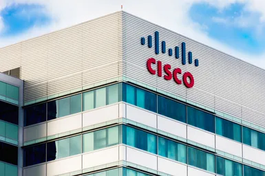
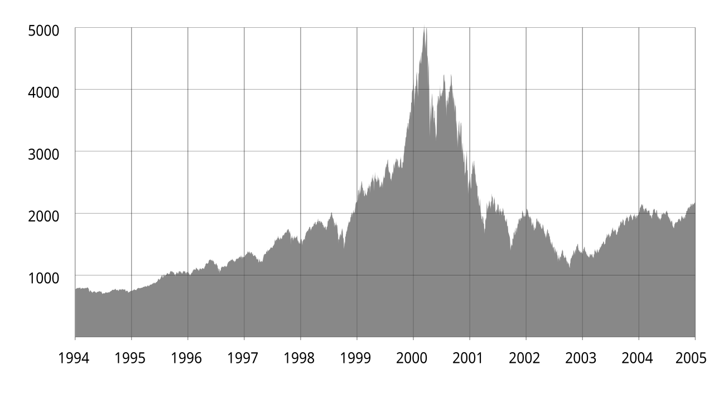
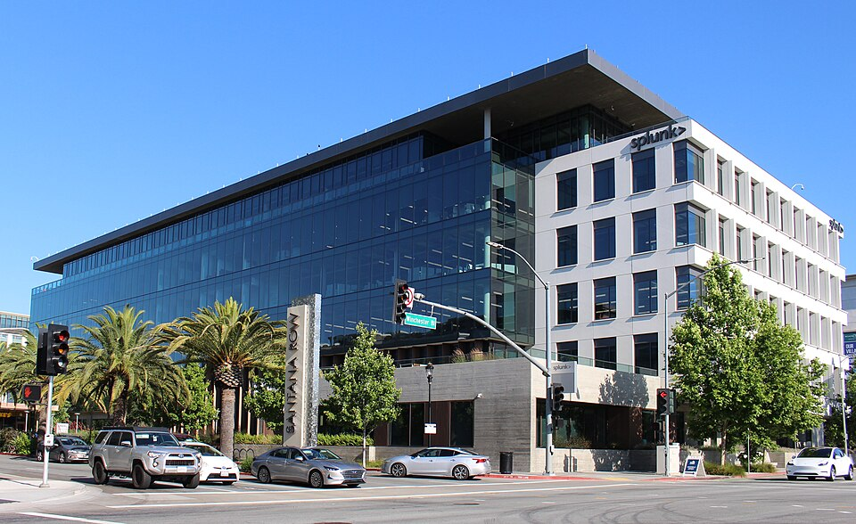

1. The Foundation (1984)
Cisco Systems was founded in December 1984 by Leonard Bosack and Sandy Lerner, two Stanford University computer scientists. They pioneered the first commercially successful Advanced Gateway Server (AGS) multi-protocol router, which allowed completely different computer networks to communicate seamlessly with one another for the first time.

A Cisco Systems building2. Powering the Dot-Com Boom (1990s)
In 1990, Cisco went public on the NASDAQ exchange. As the World Wide Web exploded in popularity throughout the 1990s, Cisco's heavy-duty routers and newly acquired Catalyst routing switches quickly became the essential backbone infrastructure of the entire global internet infrastructure ecosystem.

DOT-COM Boom3. Global Tech Leadership (Present & Beyond)
Evolving past basic routing, Cisco diversified globally into advanced Intent-Based Networking, enterprise cybersecurity frameworks, IP telephony, IoT hardware, and cloud management dashboards. Today, Cisco remains a dominant world powerhouse driving enterprise-grade connected engineering solutions worldwide.

Cisco's headquarters in Santana Row, San Jose, California